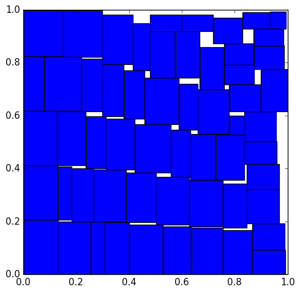

Rectpack is a collection of heuristic algorithms for solving the 2D knapsack problem, also known as the bin packing problem. In essence packing a set of rectangles into the smallest number of bins.

Download the package or clone the repository, and then install with:
bash
python setup.py install
or use pypi:
bash
pip install rectpack
Packing rectangles into a number of bins is very simple:
```python from rectpack import newPacker
rectangles = [(100, 30), (40, 60), (30, 30),(70, 70), (100, 50), (30, 30)] bins = [(300, 450), (80, 40), (200, 150)]
packer = newPacker()
for r in rectangles: packer.add_rect(*r)
for b in bins: packer.add_bin(*b)
packer.pack() ```
Once the rectangles have been packed the results can be accessed individually
```python
nbins = len(packer)
abin = packer[0]
width, height = abin.width, abin.height
nrect = len(packer[0])
rect = packer[1][0]
x = rect.x # rectangle bottom-left x coordinate y = rect.y # rectangle bottom-left y coordinate w = rect.width h = rect.height ```
looping over all of them
python
for abin in packer:
print(abin.bid) # Bin id if it has one
for rect in abin:
print(rect)
or using rect_list()
```python
all_rects = packer.rect_list() for rect in all_rects: b, x, y, w, h, rid = rect
```
Lastly all the dimmension (bins and rectangles) must be integers or decimals to avoid collisions caused by floating point rounding. If your data is floating point use float2dec to convert float values to decimals (see float below)
A more detailed description of API calls:
rotation: Enable or disable rectangle rotation.
packer.add_bin(width, height[, count][, bid])
Add empty bin or bins to a packer
bid: Optional bin identifier
packer.add_rect(width, height[, rid])
Add rectangle to packing queue
rid: User assigned rectangle id
packer.pack():
Starts packing process (only for offline mode).
packer.rect_list():
Returns the list of packed rectangles, each one represented by the tuple (b, x, y, w, h, rid) where:
This library implements three of the algorithms described in [1] Skyline, Maxrects, and Guillotine, with the following variants:
MaxRectsBlsf
Skyline
SkylineMwflWm
Guillotine
I recommend to use the default algorithm unless the packing is too slow, in that case switch to one of the Guillotine variants for example GuillotineBssfSas. You can learn more about the algorithms in [1].
Rectpack is thoroughly tested, run the tests with:
bash
python setup.py test
or
bash
python -m unittest discover
If you need to use floats just convert them to fixed-point using a Decimal type, be carefull rounding up so the actual rectangle size is always smaller than the conversion. Rectpack provides helper funcion float2dec for this task, it accepts a number and the number of decimals to round to, and returns the rounded Decimal.
```python from rectpack import float2dec, newPacker
float_rects = [...]
dec_rects = [(float2dec(r[0], 3), float2dec(r[1], 3)) for r in float_rects]
p = newPacker()
...
```
[1] Jukka Jylang - A Thousand Ways to Pack the Bin - A Practical Approach to Two-Dimensional Rectangle Bin Packing (2010)
[2] Huang, E. Korf - Optimal Rectangle Packing: An Absolute Placement Approach (2013)